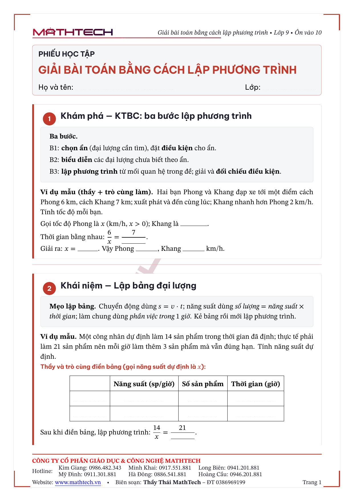
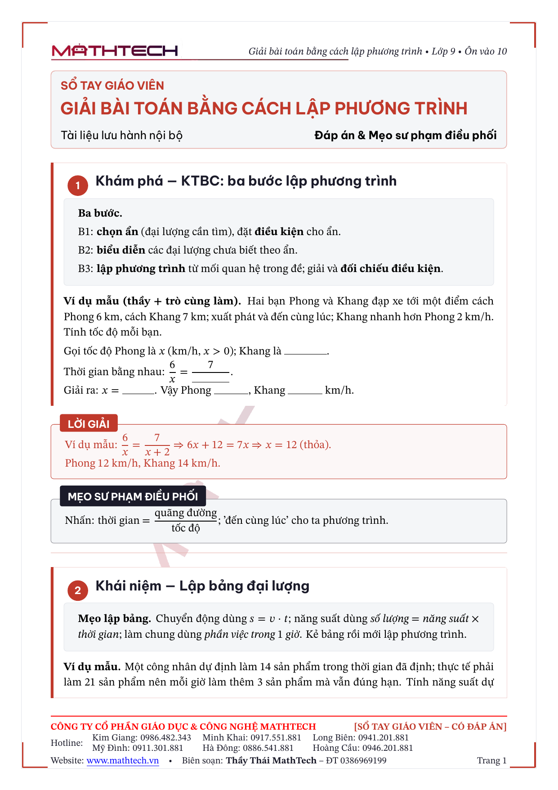
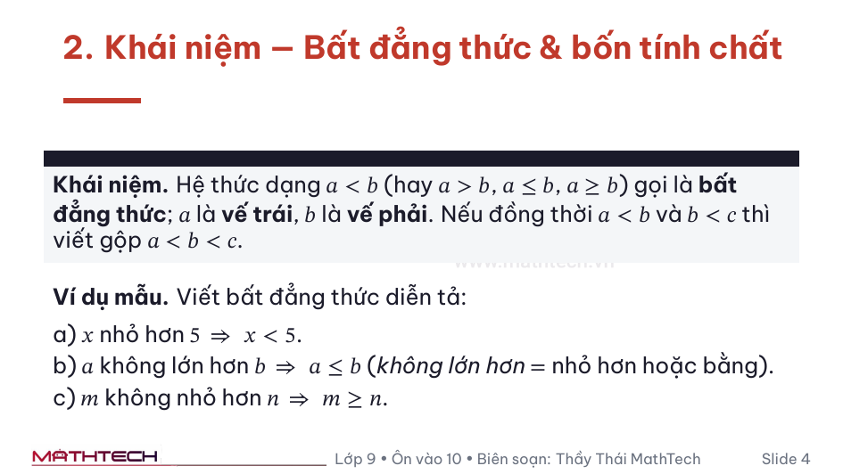
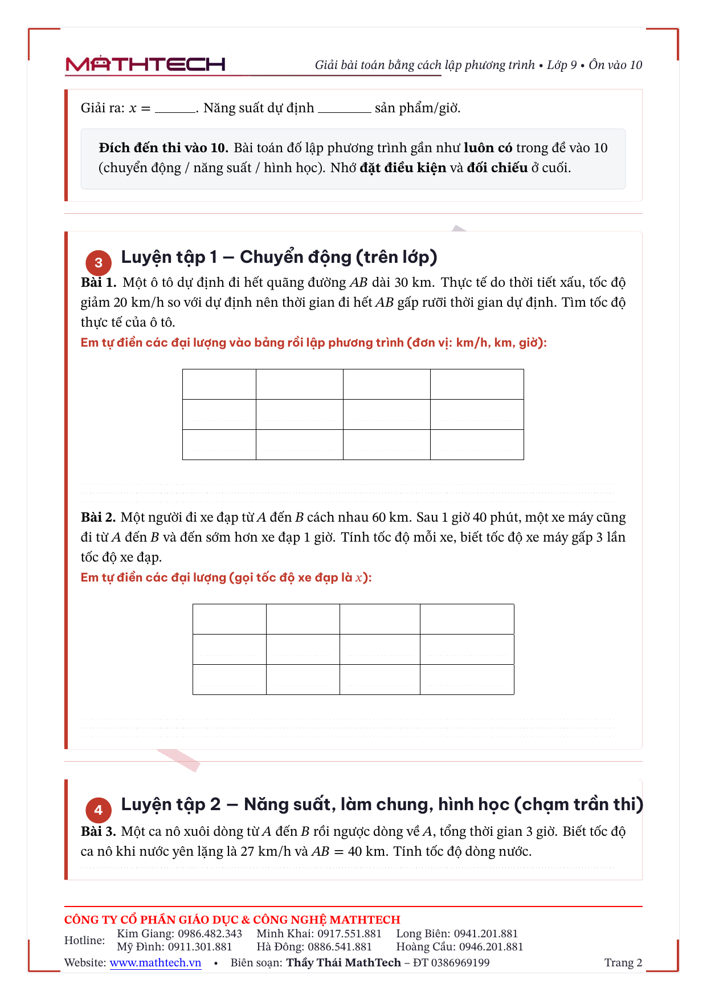

Từ “gõ Word từng phiếu” → một nguồn, ba bản in chuyên nghiệp, tự động.
Bản trình bày có bằng chứng phiếu thật + số liệu đo trực tiếp từ hệ thống. Mọi con số đều gắn nhãn đo thật hoặc ước tính.
Vấn đề
Soạn Word — 1 bài, làm tay 3 lần
Tốn 3 lần công: phiếu HS, bản đáp án GV, slide — mỗi thứ gõ lại từ đầu.
Lệch nhau: sửa phiếu, quên sửa slide → các bản sai khác.
Toán dễ vỡ: công thức rớt font, lệch dòng khi đổi máy.
Khó nhân rộng: đổi logo/hotline → mở từng file sửa tay hàng trăm bài.
Không ai gác cổng: sai đề/đáp án chỉ lộ khi đã in, đã phát cho HS.
Lời giải
Một nguồn → máy tự xuất ba bản đồng bộ
Tách nội dung (việc giáo viên giỏi) khỏi trình bày (việc máy giỏi). Sửa 1 chỗ → cả 3 bản cập nhật.
Bằng chứng 1 · phiếu in thật
Cùng 1 nguồn → HS để trống · GV có đáp án

Phiếu học sinh — ví dụ mẫu chừa chỗ trống + bảng đại lượng điền được, ẩn lời giải

Sổ tay giáo viên — cùng trang đó, thêm hộp LỜI GIẢI đỏ + mẹo sư phạm điều phối
Tuần 4 — “Giải bài toán bằng cách lập phương trình” (Phiếu B), xuất từ giai-bai-toan-lap-pt.json. Footer tự động: tên công ty, hotline, chữ ký Thầy Thái.
Bằng chứng 2 · slide & tổng kết chương
Cùng nguồn đó → slide chiếu & sơ đồ tổng kết

Slide trình chiếu — Beamer 16:9, chữ & công thức to đọc từ cuối lớpPhiếu tổng kết chương — sơ đồ tư duy; bản GV điền sẵn đáp án (đỏ)
Tất cả từ cùng hệ nguồn JSON — không dựng riêng slide, không vẽ lại sơ đồ.
Số liệu — đo trực tiếp từ hệ thống
Cho “người soi số”: con số, không cảm tính
~20giây
Máy build 3 PDF / 1 bài
đo thật (XeLaTeX)
28trang
Tổng 3 bản /bài (4+7+17)
đo thật
41tuần
Khung cả năm (22 ĐS+19 HH)
đếm thật
6+ SymPy
Trình kiểm tra độc lập
đếm thật
15
Template khuôn in (.j2)
đếm thật
25
Nhóm khoá thiết kế tập trung
design_tokens
41/41
Bài test tự động PASS
pytest
28
Snapshot style (rollback được)
đếm thật
~1.950 dòng code, có bộ test riêng. Hạ tầng đã dựng xong — thêm bài là tận dụng lại toàn bộ.
Dây chuyền
5 bước — phần “máy làm” tính bằng giây
Chỉ bước giữa (đỏ) tốn chất xám — đúng việc của giáo viên. 4 bước còn lại máy lo.
Bên trong nhà máy · dữ liệu chảy thế nào
Một nguồn JSON → qua cổng → khuôn in → 3 bản
Sai một dấu cũng không lọt: hỏng thì cổng trả về người sửa, qua hết mới mở khoá in. validate-all gác cổng cả kho; rebuild lan thiết kế ra mọi bài.
Khác biệt then chốt · gác cổng chất lượng
Máy tự bắt lỗi trước khi in — output thật
$python -m src.main validate bdt.json
▶ Đang trọng tài 'bdt-chung-minh-va-cuc-tri'
• latex_sanitizer: OK
• schema_validator: OK
• difficulty_gate: OK
• visual_linter: OK
• gradient_gate: OK✓ Gói bài qua cổng S2.
An toàn: chặn mã LaTeX nguy hiểm.
Cấu trúc + độ khó: đủ 5 chặng; bài khó chạm trần thi vào 10.
Trình bày: bắt ký tự & % # chưa escape và lời giải dày đặc thiếu xuống dòng — lớp lỗi từng làm vỡ bản in, nay chặn trước.
validate-all: quét sạch cả kho bằng 1 lệnh.
Trọng tài toán học
Máy giải lại độc lập để bắt sai đáp án
# SymPy tự lập ma trận dạng toàn phương, kiểm nửa-xác-định-dương
Đề: a² + b² + c² ≥ ab + bc + ca (bài "trùm cuối")
Verdict: OK — Dạng toàn phương PSD (trị riêng [3/2, 0]) ⇒ ≥ 0
# So khớp tập nghiệm người ghi vs máy giải
Đề: x² − 5x + 6 = 0
• người ghi {2, 3}: OK — Khớp tập nghiệm ['2','3']
• người ghi {2, 5}: FAIL — Lệch: người thừa ['5'], máy còn ['3']
Không “duyệt mù”: máy tự chứng minh lại, lệch dù một nghiệm là FAIL. Word không thể.
Chất lượng in
Đẹp như sách xuất bản — nhờ XeLaTeX
Slide bìa tự sinh — đồng bộ thương hiệu
Toán chuẩn nhà in: typesetting LaTeX, công thức không vỡ.
Hệ thiết kế thống nhất: 25 nhóm khoá (font/màu/lề) — một bộ chuẩn.
Font tiếng Việt nhúng sẵn → mở máy nào cũng y hệt.
Bảo mật: trình biên dịch tắt thực thi lệnh hệ thống (-shell-escape).
Sư phạm được “đóng khung”
Mỗi phiếu đi đúng 5 chặng × 4 tầng
4 tầng bài trong mỗi phiếu: lõi trên lớp → BTVN → mở rộng (thang bậc + gợi ý, máy kiểm) → bài ★ thử thách cho HS giỏi tự cày, không phải đợi bạn yếu.
Sư phạm · giải phóng dần trách nhiệm
“Tôi làm — Cùng làm — Em làm”, đóng ngay vào phiếu
TÔI LÀMGV làm mẫu, lời giải mẫu
CÙNG LÀMví dụ chừa chỗ trống, thầy + trò điền
EM LÀMbảng trống hẳn, HS tự lập
Cùng làm — ví dụ mẫu chừa chỗ trống; bảng đại lượng điền được (s = v·t, năng suất…) ngay trên phiếu

Em làm — bảng để trống hẳn cho HS tự lập (quen thao tác phòng thi); đáp án chỉ có trong Sổ tay GV
Bảng điền được là tính năng mới: HS điền đại lượng ngay trên phiếu — từ “cùng làm” có khung dẫn dắt đến “em làm” trống hẳn, đúng nhịp giải phóng trách nhiệm.
Đủ bài · không quá tải
Chủ đề giàu → tách 2 phiếu, mỗi phiếu vừa một buổi
Tuần 4 · “PT quy về phương trình bậc nhất một ẩn” quá nặng cho 1 phiếu → tách đôi:
Phiếu A · PT tích & ẩn ở mẫu
Lõi trên lớp: PT tích → PT chứa ẩn ở mẫu.
Ngân hàng BTVN + thang mở rộng có gợi ý.
Bài ★ thử thách — HS giỏi tự cày.
Phiếu B · Giải toán bằng lập PT
Lõi trên lớp + bảng đại lượng điền được.
Chuyển động · năng suất · hình học — chạm trần thi.
Bài ★ thử thách — HS giỏi tự cày.
Mỗi phiếu tự đủ 4 tầng và vừa một buổi ~3h: HS giỏi luôn có bài cày tới, HS yếu không ngợp — không nhồi một phiếu khổng lồ.
Khác biệt · quản lý tập trung
Sửa một chỗ → đổi toàn bộ phiếu
Logo, hotline, tên công ty, màu, font → một file cấu hình duy nhất (25 nhóm khoá).
Đổi hotline? Sửa 1 dòng → lệnh rebuild in lại toàn bộ, không sót bản nào.
Chữ ký giáo viên là phần cố định của khuôn in → không bao giờ quên, không in thiếu.
So với: đổi hotline trên hàng trăm file Word từng cái một.
Cộng tác & an toàn
Nhiều giáo viên cùng soạn — có lịch sử, không đè nhau
Lưu trên Git/GitHub: soạn song song, có lịch sử, hoàn tác được.
Hết cảnh “phieu_final_v3_sửa_lần_cuối_thật.docx”.
28 snapshot style đã lưu → đổi thiết kế lỡ hỏng, quay lại trong vài giây.